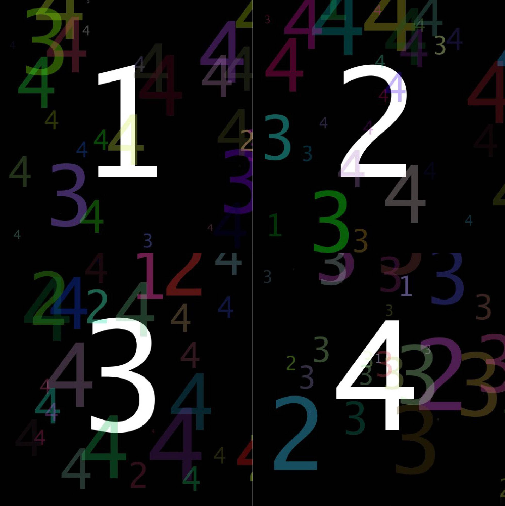
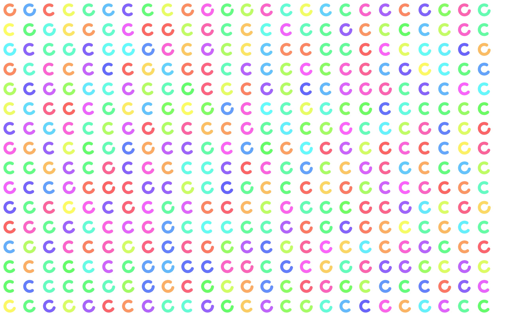
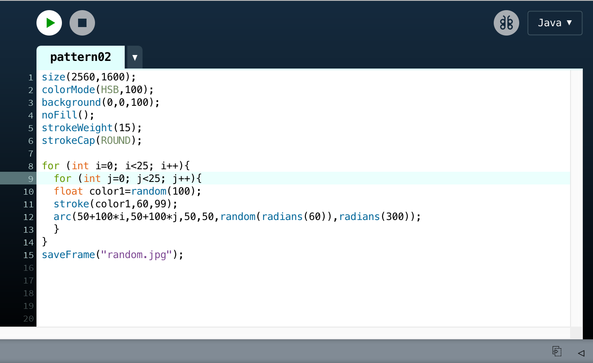
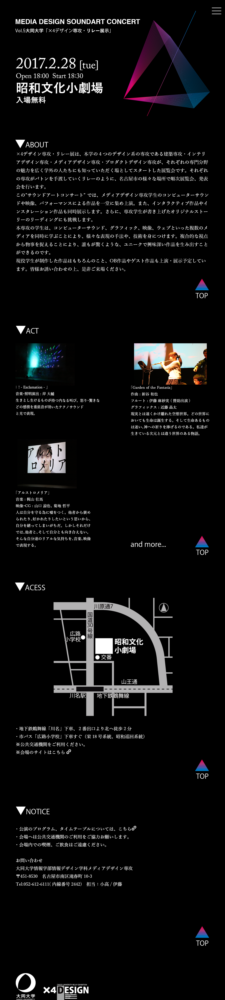

その他制作物
私地崎滉平が実験的に制作した制作物をご紹介します。
Processing
ProccesingというJavaを元にした言語を用い、プログラミングアートを制作しました。プログラムを実行するたびに"1","2","3","4"の周りにある１～４のカラフルな数字が色・位置がランダムに配置されます。 この作品は１～４のそれぞれのプログラム実行結果を画像として書き出し、コラージュしたものです。
同じくProccesingを用いたプログラミングアートです。プログラムを実行するたびに”C”という文字の開き具合、色がランダムに生成され描画される作品です。 以下が、このプログラミングアートのソースコードです。
p5.js
ProcessingをJavascriptに移行した「p5.js」を用いたWebページを制作しました。サイン波を用いて、 波を打つような表現を目指しました。中央のピンク色のテキストは、背景要素としてp5.jsを使用するテスト用テキストです。
webGLを用いたWebVRコンテンツ
2019年6月2日に開催されたオープンキャンパスにおいて、WebGLを用いたWebVRコンテンツを制作しました。 学外展示で展示した作品をベースに、Oculus GOというVRゴーグルに内蔵されているWebブラウザで動作するVRコンテンツとして, 再度コーディングをしました。「Enter VR」ボタンをクリックすると、VR対応ブラウザで360度見渡せるコンテンツとなります。VR酔いを防ぐため、 カメラの動く速度や星の数、色を調整しました。
作品サイトURL
作品はこちらをご覧ください。
サウンドアートコンサート特設WEBサイトデザイン
2017年に行われた、「サウンドアートコンサート」という大同大学の情報メディア学科メディアデザイン専攻の学生が主催する作品発表会の特設WEBサイトのデザインカンプを個人的に制作しました。 WEBサイトを見てくださった方に、コンサート当日の作品発表を楽しみにしていただけるよう、作品の詳細情報と画像を中心に紹介することを重点に置いたデザインにしました。 また、コンサートの紙のポスターで使用されていたロゴや黒を基調としたデザインを踏襲し、WEBとポスターで差異をなるべく無くしました。